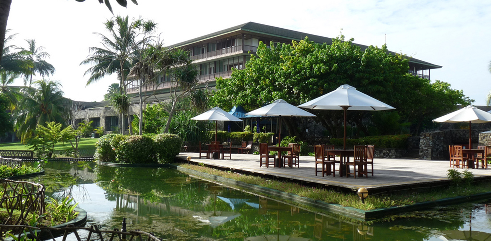
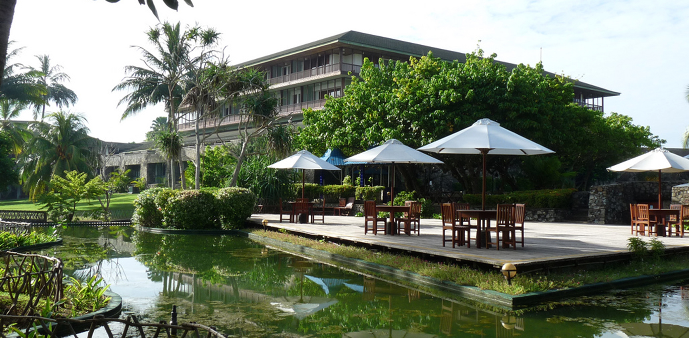
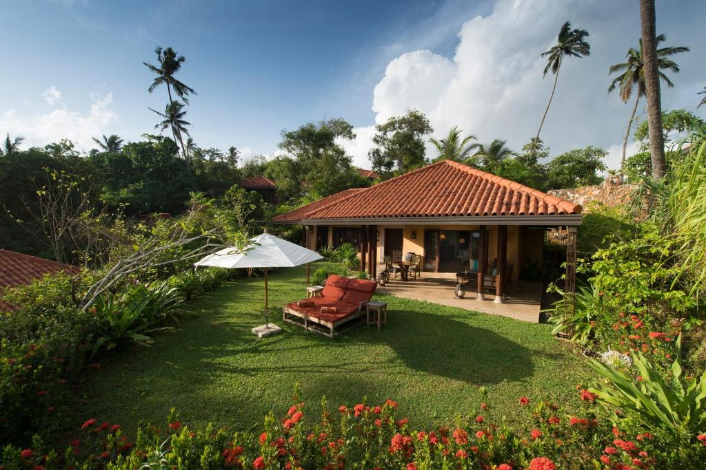
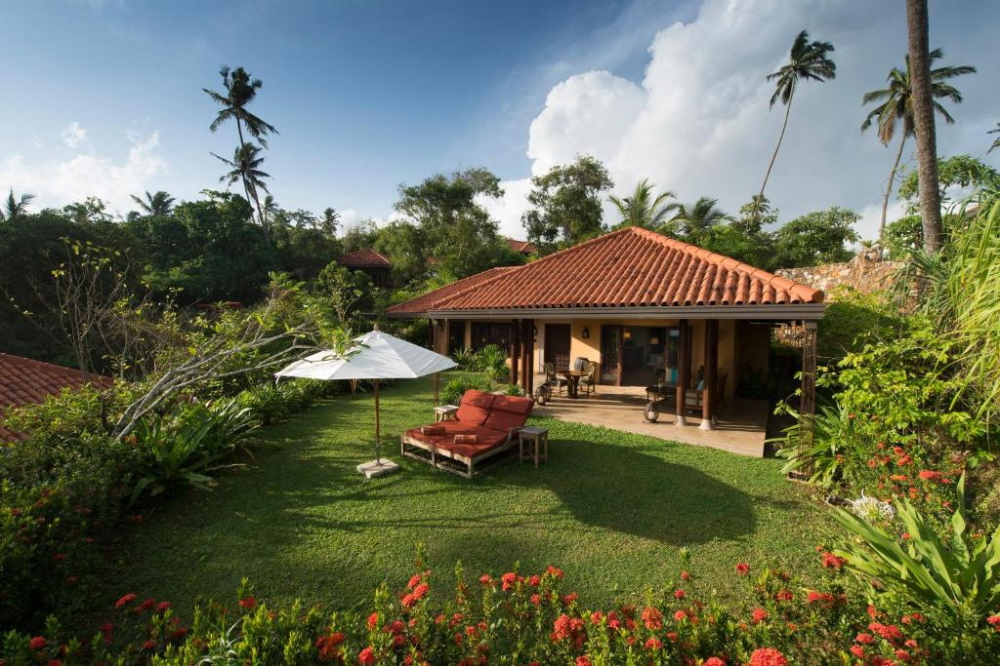

Cinnamon Bentota Beach
Situated in Bentota, less than 1 km from Bentota Beach, Cinnamon Bentota Beach features ....
Read more....
Situated in Bentota, less than 1 km from Bentota Beach, Cinnamon Bentota Beach features ....
Read more....


Situated in Bentota, less than 1 km from Bentota Beach, Cinnamon Bentota Beach features accommodation with an outdoor swimming pool, free private parking, a garden and a shared lounge. This 5-star resort offers room service and a concierge service. The accommodation offers a 24-hour front desk, airport transfers, a kids' club and free WiFi throughout the property. The resort will provide guests with air-conditioned rooms with a desk, a kettle, a fridge, a minibar, a safety deposit box, a flat-screen TV, a balcony and a private bathroom with a bidet.
The daily breakfast offers buffet, continental or Italian options. At Cinnamon Bentota Beach you will find a restaurant serving American, Italian and Mediterranean cuisine. Vegetarian, vegan and gluten-free options can also be requested. The accommodation offers a terrace. You can play billiards and table tennis at this 5-star resort, and the area is popular for cycling.
Induruwa Beach is 2.9 km from Cinnamon Bentota Beach, while Bentota Lake is 1.2 km from the property. The nearest airport is Ratmalana International Airport, 66 km from the resort.


 

Situated in Udawalawe, 17 km from Udawalawe National Park, Kottawatta River Bank Resort features accommodation with an outdoor swimming pool, free private parking, a garden and a shared lounge. Boasting family rooms, this property also provides guests with a children's playground. The hotel also offers free WiFi as well as a paid airport shuttle service.
At the hotel rooms are fitted with air conditioning, a desk, a terrace with a mountain view, a private bathroom, a flat-screen TV, bed linen and towels. The rooms will provide guests with a wardrobe and a kettle.
A buffet, à la carte or continental breakfast can be enjoyed at the property. At Kottawatta River Bank Resort you will find a restaurant serving Chinese, British and French cuisine. Vegetarian, vegan and dairy-free options can also be requested. With staff speaking Arabic, English and Hindi, advice is available at the reception. The nearest airport is Mattala Rajapaksa International Airport, 55 km from the accommodation
Set atop a picturesque singular promontory rising 40 m above the Indian Ocean, Cape Weligama is a cliff-top resort that features three dining options that include Ocean Terrace, The Surf Bar and Tableau, all featuring dramatic views of the Indian Ocean. The dining options include Sri Lankan and European ingredients and spices locally produced.
Sumptuous and elegant, each suite and villa feature a dining area, seating area with sofas and a private terrace. Room amenities include a flat-screen TV with cable channels, espresso machine and Sonos sound system. Bathrooms come with a separate shower cum steam room and stone bathtub and Ophir toiletries are provided. Guests can request for in-room dining and spa services.
Cape Weligama offers shared infinity pools for 2 - 3 free standing villas with two main pools the cove pool and the iconic 60 m crescent shaped cliff-top infinity pool with amazing views. Other facilities include a spa villa, watersports centre and fitness centre. The property can arrange for scuba diving by the PADI- certified dive centre, surfing lessons, lake kayaking and rice paddy bicycling. The area is popular for snorkelling, stilt fishing and whale watching expeditions.
Just a 30-minute drive east of Galle and 7 km from Mirissa Bay, the resort also helps arrange excursions to the Uda Walawe national park.
 

Featuring a mesmerising secluded beachfront, Anantara Peace Haven Tangalle Resort is located on cliff in a large coconut plantation with panoramic sea views. Be welcomed with a cultured experience with the beating of traditional "raban drums", and leave with a local blessing and sundown ceremony with local drums and traditional Sri Lankan conch shell blowers.
Offering in-room check-in services, Anantara Peace Haven boasts 32 5 star private villas featuring individual plunge pools with highly trained personal butlers at your service. Choose between either villas overlooking stunning views of the beach or a private garden. These villas reflect Sri Lanka's elegant cultural beauty and are a perfect place to calm your nerves. All villas are fitted with a wine humidor, a fully stocked personal bar and an espresso machine, Bose sound systems, separate rain showers, a bath tub and Theme bath products.
The resort features, six dining options including a Sri Lankan inspired Teppanyaki beach restaurant and a specialty Italian restaurant, II Mare, which offers dramatic views of the ocean. Wine tasting and parings can be arranged by our Wine gurus. Cooking enthusiasts can sign up for a Spice Spoons Sri Lankan cooking classes.
Pamper yourself at the Anantara Spa with Ayurvedic massage and reflexology treatment rooms, with an impressive outdoor swimming pool and a kids & teen club with trained child care professionals. Ten-minute in villa foot rituals can also be arranged by a spa therapist.
Anantara Peace Haven Tangalle Resort is a 30-minute drive from Mulkirigala Rock Temple, a 1 and a half hour drive from the infamous Galle Fort, and 2-hour drive from Yala National Park providing guests with the opportunity to see Elephants and Leopards. The onsite travel and tour office offers excursions to an array of cultural and marine activities including surfing, cycling, wildlife safaris and blue whale watching. Anantara Peace Haven Tangalle Resort is a 2.5 hours drive from the Bandaranaike International Airport.